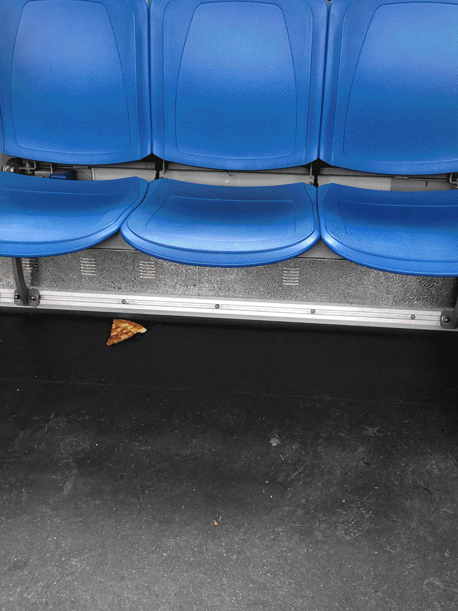
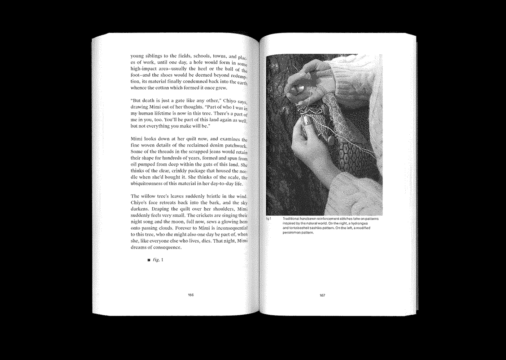
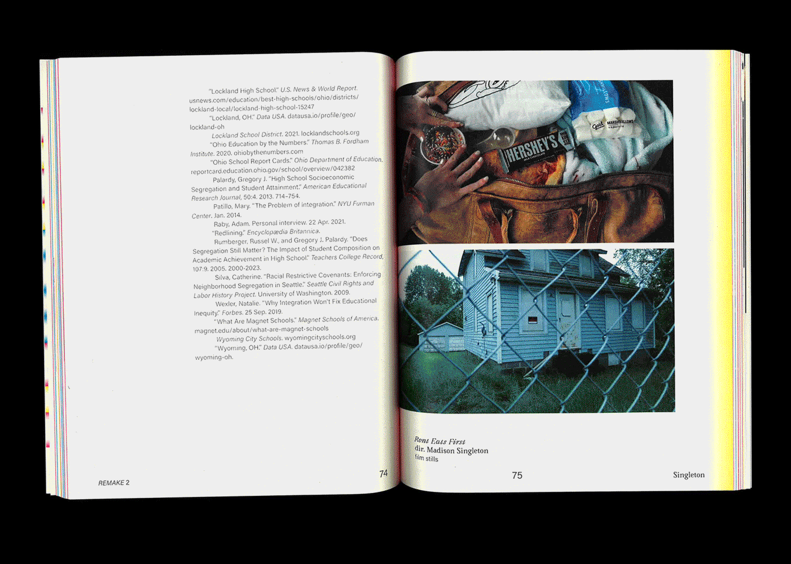
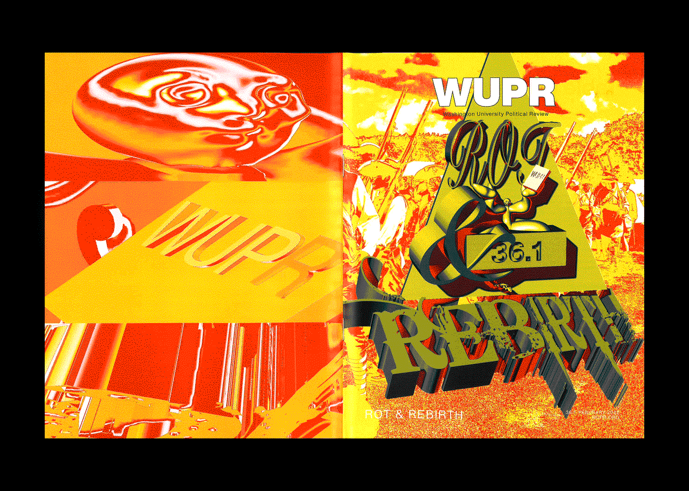
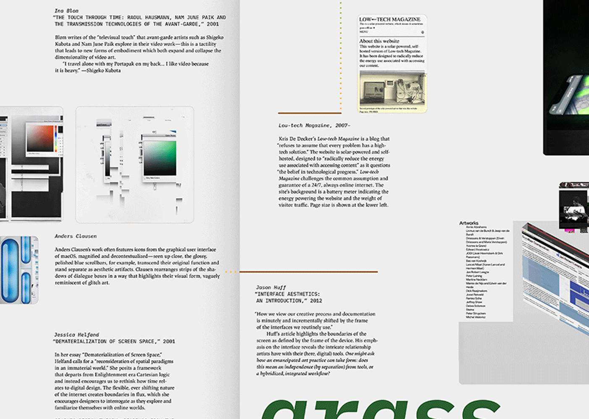

Every few weeks I confront the urge to redesign my website. Part of it is because I'm so shamelessly online and have spread myself so thin (online persona wise) that attempts to unify my various selves end in long bouts of introspection, often to little avail. In lieu of a construction site GIF, here's me indulging in speculating about the structure of this website:
I'm interested in thinking of/using this website as a sandwichboard:
The Webmaster
An aspiring morning person living in New England. Works primarily across print and interaction design, with additional interests in creative technology, user research, exhibition design, and new media.
I am interested in experiences that are magical, stuff that helps us reconsider intimacy and connection, as well as overlooked or ignored spaces online, in books, and beyond. Dedicated to silly and serious things.
I enjoy making friendly and generative tools, books, and programs and wading the handmade web. Recent topics that are important to me include mass/pop aesthetics, cringe and embarrassment online, and media both harsh and soft. Currently a digital designer at Sosolimited. I would like to become part of the background; always down for a chat or to collaborate.
Projects
I am deeply invested in conversations about| Fresh Not Frozen | |
A small mobile site that delivers bite-size factoids about the American TV dinner, perfectly portioned for distracted reading. | 2022 |
|---|---|---|---|
| Ouija Board Seance | |
A crowdsourced poster that plays with the gesture of obscuring and revealing information. A collaboration with Betsy Ellison. | 2021 |
| This book you are holding is a junkyard | |
An adaptation of Jussi Parikka’s essay, “Malware as Operational Art: On the If/Then of Geopolitics and Tricksters,” from Het Nieuwe Instituut’s 2019 exhibition, Malware: Symptoms of Viral Infection. | 2020 |
| Basic Space | |
Assets for a speculative festival, Basic Space, that explores the potential of abstracting meme formats. Hover states on the microsite reveal not only the skeleton of the title’s letterforms, but also additional information about the festival. | 2021 |
| Are.na Annual |  | Editorial design with Daniel Pianetti for the 2022 Are.na Annual, a collection of essays, interviews, and artwork from the Are.na community. | 2022– |
| Refringo | |
An interactive modular alphabet that explores chance relationships between part and whole. | 2021 |
| Remake |  | Editorial design for REMAKE, an annual journal celebrating first-year work. Dedicated to changing the top-down hierarchy of creative and academic content, REMAKE showcases student work ranging from art and research to creative writing and interviews. | 2020–22 |
| Songs for a Summer Stroll | |
Playlist cover for A24’s “Songs for a Summer Stroll”, promoting the film MEN. With RegretsOnly. | 2022 |
| Nostalgia Loop | |
A broadsheet housing two articles about the role of nostalgia in global and American politics. Influenced by the comfort of vintage food graphics, this newspaper considers how complacency can be dangerous. | 2021 |
| Washington University Political Review |  | Assorted illustrations for WUPR. | 2020–22 |
| A Window For Two | |
A program exploring the poetics of screenshots; watch digital sunsets with your computer. | 2020 |
| On Work | |
A set of four coffee sleeves that link to a prototype of a selfie filter. Pondering the nature of work and coffee culture. (Prototype contains flashing images.) | 2021 |
| memory garden | |
A digital zen garden: collecting worldwide memories submitted anonymously on the little memory app, this prototype explores ASCII art and the metaphor of memories as blossoming flowers. | 2020 |
| Computer Grass is Natural Grass |  | A poster/website about the materiality of interfaces and the metaphors that shape them. One side of the poster references interface elements characteristic of macOS and neumorphism, whereas the other is heavily influenced by the Talmud and other scholarly texts that use a bracketed composition for discussion. | 2020– |
| Some texts on the iPhone | |
An art book containing various writings about and imagery of the iPhone to explore the device’s role in contemporary American society as status symbol, erotic object, spectacle of lightness, and luxury destroyed. | 2022 |
| Meme Engine Sampler | |
Abstracting meme formats via a custom-made Drawbot program. A collaboration with Nathan Springman. | 2021 |
| Feelings at the Edge: A Chumbox Tour | An essay about sketchy internet chumbox ads. For Coven Berlin. | 2022 | |
| The Mockup Aesthetic: Gestures of Transgression | An interactive essay about the politics of wheatpaste mockups. For FLAT. | 2022 |
Commonplace Section
You can't live life on platforms or out of a wallet, lest you lose your way and become a wandering ghost that is searching for a unexplained longing.
Some may worry about whether powerful new neural-network models for generating text and images will replace workers and artists. But this can be true only if beauty and creativity are measurable by one-dimensional metrics, if art and human endeavors are static forms whose rules and objectives do not change, if we reject the possibility of meaning and principle and are content with just vibes.
When a nation feels threatened, it gets swole.
There is no longer a practical need for energetic, messy community sites, but what is life without desire? The need to be seen and to participate digitally and otherwise endures.
The harder part, I believe, is to detect a real that seems fake. An actual erosion of reality arises from our lack of willingness to believe the true things we are seeing with out own eyes. To detect when a joke isn’t a joke, when a LARP isn’t a LARP, when a draft opinion isn’t a draft, and so on.
Naming is control. It establishes, if not ownership, at least a relationship of some intimacy as well as a chain of bizarre equivalences: a set of wiggles in the muscles of the mouth and larynx = a set of phonemes = a constellation of letters = a star. It’s a pretty arbitrary chain, but it’s all that allows us to talk about the world. But what does it mean to name something that cannot hear you, in a world that doesn’t care?
Susan Tallman, The Collections of Barbara Bloom, 2007, p. 45.
Even now, being online is to watch history accumulate in real time.
negativity as a tonal choice not only lends an air of discernment, but brims with expressive opportunity: the diction of dissatisfaction offers its own satisfactions.
Website Log